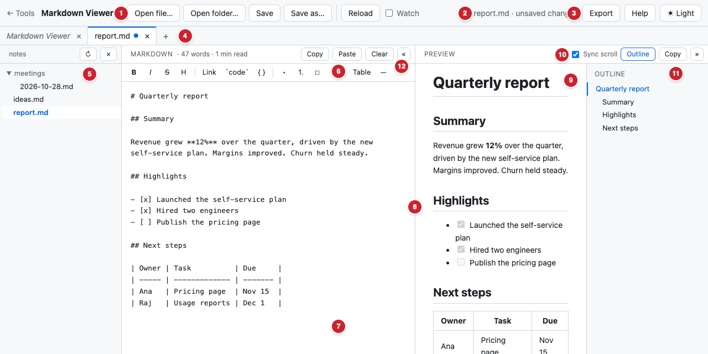

Markdown Viewer: how to use it
Write Markdown on the left and see it rendered on the right. Everything runs in your browser: no account, no server, no upload.
Quick start
- Type or paste Markdown into the left pane. The preview on the right updates as you type.
- Open a file with Open file… (or ⌘O / Ctrl+O), or drag a
.mdfile onto the page. It opens in its own tab. - Save with Save or ⌘S / Ctrl+S.
- Start something new with the + next to the tabs.
- Share the result: Copy above the preview copies it with formatting for email or documents, and Export makes an HTML file or a PDF.
The screen

- File actions: Open file…, Open folder…, Save, Save as…, and for files Reload and ☐ Watch.
- Status message: what's going on, for example whether the current document has unsaved changes.
- Export (HTML, PDF, .md), Help (this page) and the theme button.
- Tabs: every open document. A ● means unsaved changes. Click to switch, × or middle-click to close, + for a new scratch note.
- Folder sidebar: appears after Open folder…. Click a file to open it.
- Formatting toolbar: bold, italic, headings, links, code, lists, quotes, tables.
- Markdown pane: where you type. The bar above shows the word count and reading time.
- Divider: drag to resize the panes; double-click to reset.
- Preview pane: the rendered result, updated as you type.
- Sync scroll, Outline and Copy (copies the formatted preview).
- Outline: the document's headings; click one to jump there.
- Collapse buttons « and »: hide a pane to give the other the full width.
Scratch notes and files
Each tab holds one of two kinds of document:
| Scratch note | File | |
|---|---|---|
| How you get one | +, or just start typing | Open file…, drag and drop, or the folder sidebar |
| Tab title | In italics, taken from the first line | The file name |
| Where it's kept | Saved automatically in this browser, and still there next time you open the viewer | On your disk. Edits stay in the tab until you Save. |
| Unsaved changes | Never: every keystroke is kept | Shown by a ● on the tab |
To turn a scratch note into a file, use Save as… (or Save). The tab then becomes a file tab.
If you have the viewer open in more than one window or browser tab, your scratch notes stay in sync between them: typing in one shows up in the others, and adding or closing a note updates every window. (Opened files belong to the window you opened them in.)
Opening files and folders
- Open file… or ⌘O / Ctrl+O: pick one or more Markdown files (
.md,.markdown,.txtand similar). Each opens in a new tab. - Drag and drop files onto the page.
- Opening a file that's already open just switches to its tab.
- If the current tab is an empty scratch note, the file replaces it instead of adding another tab.
Folder sidebar (Chrome and Edge)
Open folder… (or dragging a folder onto the page) lists every Markdown file in that folder and its subfolders in a sidebar. Click a file to open it. Hidden folders and node_modules are skipped. ↻ rescans the folder; × closes the sidebar.
Saving
- Save (⌘S / Ctrl+S) writes the current tab back to its file. The first time, the browser asks for permission to edit the file.
- Save as… (⇧⌘S / Shift+Ctrl+S) saves to a new file you choose. For a scratch note, Save does the same.
- In Safari and Firefox, browsers can't write to your files, so Save downloads the Markdown instead.
- Closing a tab with unsaved changes, or leaving the page, asks you first.
Reload and Watch
These appear in the header when the current tab is a file opened in Chrome or Edge.
- Reload reads the file from disk again. If you have unsaved edits, it asks before discarding them.
- ☐ Watch checks the file every second and reloads it when it changes. That's handy when another program, such as your code editor, writes the file: the preview stays live while you keep your place.
- Watch never throws away your edits. If the file changes on disk while you have unsaved changes, the status message warns you. Then choose Reload to take the disk version, or Save to overwrite it with yours.
Writing and formatting
The toolbar above the Markdown text inserts Markdown for you. Select some text first to format it, or click with nothing selected to insert a placeholder you can type over. Clicking a button again on already-formatted text removes the formatting.
| Button | Does | Shortcut |
|---|---|---|
| B I | Bold, italic, strikethrough | ⌘B ⌘I ⇧⌘X |
| H | Cycles the line through #, ##, ### and back to plain text | ⇧⌘H |
| Link | Makes a link and selects the URL part so you can type or paste it | ⌘K |
| `code` { } | Inline code; a fenced code block around the selected lines | ⌘E |
| • 1. ☐ ❝ | Bulleted list, numbered list, task list, quote, applied to every selected line | |
| Table ― | Inserts a table template, or a horizontal rule |
On Windows and Linux, use Ctrl where this page shows ⌘. ⌘Z / Ctrl+Z undoes any formatting. Tab inserts four spaces instead of leaving the text box.
The bar above the Markdown also shows the word count and an estimated reading time.
Markdown cheat sheet
| Type this | To get |
|---|---|
# Heading, ## Smaller heading | Headings (levels 1 to 6) |
**bold**, _italic_, ~~struck~~ | bold, italic, |
[text](https://example.com) | A link |
 | An image |
- item or 1. item | Bulleted or numbered list |
- [ ] to do, - [x] done | Task list with checkboxes |
> quoted | A block quote |
`code` | Inline code |
--- on its own line | A horizontal rule |
| A | B | / |---|---| / | 1 | 2 | on three lines | A table |
Leave a blank line between paragraphs. GitHub-flavored Markdown is supported.
Code, diagrams and math
Code with syntax highlighting
Put the language name after the opening fence:
```python
def greet(name):
return f"Hello, {name}!"
```Common languages work: js, ts, python, java, go, rust, sql, bash, json, yaml, html, css and many more.
Diagrams (Mermaid)
Use mermaid as the language to draw flowcharts, sequence diagrams, Gantt charts and more:
```mermaid
flowchart LR
Idea --> Draft --> Review --> Publish
```If a diagram has a mistake, the preview shows "Diagram error" with the reason. The Mermaid documentation lists every diagram type.
Math (LaTeX)
- Inline:
$E = mc^2$. There must be no space just inside the dollar signs, so prices like "$5 and $10" stay as plain text. - Block: put
$$on its own line before and after the formula:
$$
\sum_{i=1}^{n} i = \frac{n(n+1)}{2}
$$Preview, sync and outline
- ☑ Sync scroll keeps both panes at the same place in the document. Scroll either side and the other follows. Untick it to scroll them separately.
- Outline shows a list of headings beside the preview. Click one to jump there in both panes; the current section is highlighted as you scroll.
- Links in the preview open in a new browser tab.
Copy, paste and clear
- Copy above the Markdown copies the Markdown text.
- Paste inserts your clipboard at the cursor. The browser may ask for permission the first time; ⌘V / Ctrl+V always works too.
- Copy above the preview copies the formatted result. Paste it into an email, Google Docs, Word or Slack and it keeps its headings, bold text, lists and tables.
- Clear empties a scratch note (⌘Z brings the text back). On a file tab it never touches the file: it opens a fresh empty scratch tab instead, ready for something new.
Resizing and collapsing panes
- Drag the divider between the panes to resize them. Double-click it to go back to 50/50. You can also click it and use the arrow keys (hold Shift for bigger steps).
- « collapses the Markdown pane and » collapses the preview, giving the other pane the full width. Click the thin strip to bring it back.
- Your layout, theme, and the Sync scroll and Outline settings are remembered for next time.
- In a narrow window the panes stack vertically.
Export, print and PDF
The Export menu has three options:
- Download as HTML: a single, self-contained web page of the preview that anyone can open in a browser.
- Print / Save as PDF: prints just the preview, in light colours. To get a PDF, choose "Save as PDF" as the printer in the print dialog.
- Download Markdown (.md): the Markdown text as a file.
Light and dark theme
The theme button in the header cycles through ◐ Auto (follow your computer's setting), ☀ Light and ☾ Dark.
Keyboard shortcuts
On Windows and Linux use Ctrl instead of ⌘, and Shift for ⇧.
| Shortcut | Action |
|---|---|
| ⌘O | Open files |
| ⌘S | Save |
| ⇧⌘S | Save as |
| ⌘B / ⌘I / ⇧⌘X | Bold / italic / strikethrough |
| ⌘K | Link |
| ⌘E | Inline code |
| ⇧⌘H | Cycle heading level |
| ⌘Z | Undo |
| Tab | Indent (four spaces) |
Formatting shortcuts work while the cursor is in the Markdown pane.
Browser support
| Feature | Chrome, Edge (and other Chromium browsers) | Safari, Firefox |
|---|---|---|
| Writing, preview, tabs, export, everything else | Yes | Yes |
| Save straight back to the file | Yes | Downloads a copy instead |
| Reload and Watch | Yes | No (files open as copies) |
| Open folder sidebar | Yes | No |
Privacy
Nothing you type or open is sent anywhere. The viewer is a set of files on your computer; all its libraries are included, so it works offline. Scratch notes and settings are stored only in this browser.
One exception: an exported HTML file that contains math links to the KaTeX style sheet on a public CDN (jsDelivr), so the formulas display properly wherever the file is opened.
Troubleshooting
Paste says "Blocked"
The browser didn't allow clipboard access. Click in the Markdown pane and press ⌘V / Ctrl+V, or allow clipboard access for this page in your browser's site settings.
Save asks for permission
That's expected: the browser checks once that you want this page to edit the file. Choose "Save changes" or "Allow".
The status message says the file "changed on disk"
Another program changed the file while you had unsaved edits. Reload takes the version on disk (your edits are discarded); Save keeps your version and overwrites the file.
My scratch notes disappeared
They are stored in the browser, so clearing site data, using a private window, or opening the viewer in a different browser starts fresh. Save important notes as files.
A diagram or formula shows as plain text
Check the syntax: diagrams need ```mermaid, block math needs $$ on its own lines, and inline math can't have spaces just inside the $ signs.